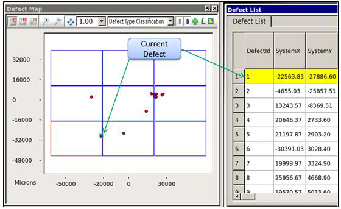
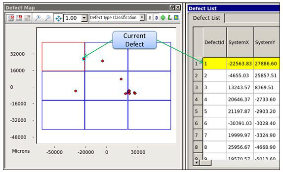
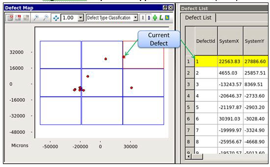

You can flip
(reflect) the defect inspection data around the X and Y axes in
Calibre DefectReview.
The Flip transformation X-Dir and Y-Dir transform the inspection
coordinate data across the corresponding axis. For example, the
X-Dir selects the X-axis as the reflection axis and transforms the
coordinates. Only the Y-coordinate is changed. Similarly, the Y-Dir
selects the Y-axis as the reflection axis and transforms the coordinates;
only the X-coordinate is changed.
Procedure
- In the Calibre DefectReview
window, click Transform > Flip.
- In the Flip sub-menu, select the axis
(X-Dir, Y-Dir) to flip the defect inspection
data.
Note: The
system coordinates of a defect are updated in the Defect List as
well.
Figure 1. Inspection
Before Applying Flip
The following figure illustrates the results of an X-Dir flip
applied to the previous figure.
Figure 2. Inspection Flipped
Around X-Axis (X-Dir)
The following figure illustrates the results of a Y-Dir flip
applied to the original figure.
Figure 3. Inspection Flipped
Around Y-Axis (Y-Dir)